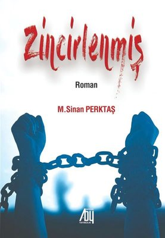
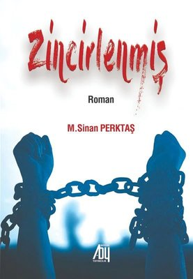

2002 yılında Elazığda doğdu. İlköğretim'i Manisa'da, Ortaöğretim'i İzmir'de tamamladı. Daha sonra 2024 yılında Ostim Teknik Üniversitesini bitirdi. Bekar ve Ankara'da ikamet etmektedir.
Mail adresi: berkay.dusunkitap@gmail.com


1968 yılında, Hatay ili Kırıkhan ilçesinde doğdu. İlköğretim ve Ortaöğretim'i yine aynı ilçede tamamladıktan sonra 1991 yılında Kara Harp Okulunu bitirdi. Daha sonra Gazi Üniversitesi Fen bilimleri Enstitüsünde iki alanda yüksek lisans eğitimini tamamladı. Evli ve iki çocuk babasıdır. Şubat 2023 de yaşanan depremden beri Diyarbakırda ikamet ediyor.
 
